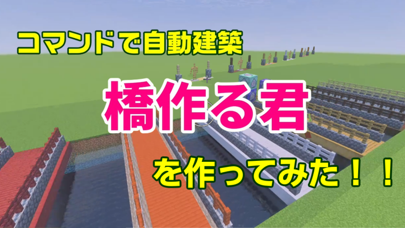

アーマースタンドで自動橋かけコマンド！

今回は、アーマースタンドを使って自動で橋を作るコマンドを紹介します。
この仕組みでは、ダイヤのヘルメットをかぶったアーマースタンドが前に進みながら、足元が空気だった場合に橋のストラクチャーを読み込みます。
まず、橋として使う形を保存するために、銅のヘルメットをかぶったアーマースタンドを使います。
以下のコマンドで、アーマースタンドの周りにある橋の形を「bridge」という名前で保存できます。
execute as @e[type=armor_stand,hasitem={item=copper_helmet,location=slot.armor.head}] at @s run structure save bridge ~-2~-1~ ~2~1~ false次に、ダイヤのヘルメットをかぶったアーマースタンドを前に進ませます。
execute as @e[type=armor_stand,hasitem={item=diamond_helmet,location=slot.armor.head}] at @s run tp @s ^^^1このコマンドでは、アーマースタンドが向いている方向に1ブロックずつ進みます。
そして、アーマースタンドの足元が空気だった場合、保存しておいた橋のストラクチャーを読み込みます。
execute as @e[type=armor_stand,hasitem={item=diamond_helmet,location=slot.armor.head}] at @s if block ~~-1~ air run structure load bridge ~-2~-1~これで、アーマースタンドが進むたびに、足元が空いていれば橋が自動で作られます。
最後に、足元が草ブロックだった場合はアーマースタンドを消します。
execute as @e[type=armor_stand,hasitem={item=diamond_helmet,location=slot.armor.head}] at @s if block ~~-1~ grass_block run killこのコマンドを使うことで、橋が地面に到着したときに自動で停止するようになります。
使い方の流れは、まず銅のヘルメットをかぶったアーマースタンドで橋の形を保存し、そのあとダイヤのヘルメットをかぶったアーマースタンドを動かして橋を作っていく、という感じです。
コマンドブロックに入れる場合は、前進コマンドとストラクチャー読み込みコマンドをリピート実行にすると、自動でどんどん橋が伸びていきます。
マイクラ統合版で、アスレチックや自動建築ギミックを作りたいときにかなり便利な仕組みです。